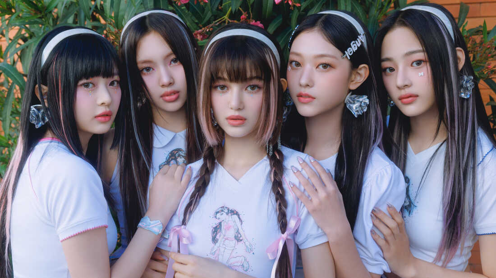

Inicio das New Jeans
NewJeans é um girl group sul-coreano formado pela ADOR, uma subsidiária da Hybe Corporation. O grupo é composto por cinco integrantes: Minji, Hanni, Danielle, Haerin e Hyein. O grupo pré-lançou seu single de estreia "Attention" em 22 de julho de 2022, precedendo seu extended play epônimo de estreia, lançado em 1 de agosto de 2022.

A primeira música
O grupo lançou o videoclipe de seu single de estreia "Attention" em 22 de julho como um lançamento surpresa, sem nenhuma promoção ou informação prévia sobre a formação do grupo. O movimento foi descrito pela Billboard como "arriscado, mas revigorante", creditando seu sucesso a "uma ênfase na música antes de qualquer outra coisa". O vídeo, que acumulou mais de 1,3 milhão de visualizações em menos de 24 horas.
Conheca os membros das New Jeans!
Minji
Minji (hangul: 민지) nascida Kim Minji (김민지)em 07 de maio de 2004 (19 anos) – líder. Ela nasceu em Chuncheon, Gangwon, Coreia do Sul.
Hanni
Hanni (hangul: 하니) nascida Hanni Pham em 06 de outubro de 2004 (19 anos) – vocalista, dançarina. Ela nasceu em Melbourne, Victoria, Austrália.
Danielle
Danielle (hangul: 다니엘) nascida Danielle Marsh em 11 de abril de 2005 (18 anos) – vocalista, dançarina. Ela nasceu em Munsan, Paju, Gyeonggi-do, Coreia do Sul.
Haerin
Haerin (hangul: 해린) nascida Kang Haerin (강해린) em 15 de maio de 2006 (17 anos) – vocalista. Ela nasceu em Pyeongchon, Dongan-gu, Anyang, Gyeonggi-do, Coreia do Sul.
Hyein
Hyein (hangul: 혜인) nascida Lee Hyein (이혜인) em 21 de abril de 2008 (15 anos) – vocalista. Ela nasceu em Incheon, Coreia do Sul
OMG
NewJeans lançou "Ditto" em 19 de dezembro de 2022, como o primeiro single de seu primeiro álbum single, OMG."Ditto" se tornou a música número um mais antiga no Circle Digital Chart da Coreia do Sul, liderando a parada por treze semanas.Foi a primeira entrada de NewJeans na Billboard Hot 100, chegando ao número 82, e no UK Singles Chart, chegando ao número 95. OMG foi lançado em 2 de janeiro de 2023. Os críticos elogiaram o álbum por seu estilo retrô. Ele estreou como número um no Circle Album Chart, vendendo 700.000 cópias em sua primeira semana de lançamento. Tornou-se o primeiro álbum a vender mais de um milhão de cópias, pouco antes de New Jeans também atingir um milhão de cópias vendidas. OMG foi acompanhado por um segundo single de mesmo nome, que se tornou viral no TikTok. "OMG" alcançou a posição 74 na Billboard Hot 100, tornando-se a música mais bem classificada na parada.
Album "Get up"
O grupo lançou seu segundo EP, Get Up, em 21 de julho de 2023. O EP estreou em segundo lugar no Circle Album Chart e vendeu 1,65 milhão de cópias em sua primeira semana de lançamento, tornando-se o terceiro álbum consecutivo do grupo. álbum para vender mais de um milhão de cópias. Foi apoiado por três singles: "Super Shy", "ETA" e "Cool with You". "Super Shy" liderou o Circle Digital Chart, dando a NewJeans seu terceiro single número um na Coreia do Sul, e se tornou a faixa de melhor desempenho em várias paradas internacionais. O sucesso comercial da faixa levou NewJeans a alcançar seu primeiro número um na parada de artistas emergentes da Billboard. Todas as faixas receberam videoclipes, que apresentaram colaborações com várias marcas e personalidades, incluindo a empresa de TI Apple no videoclipe de "ETA(gravado totalmente com um Iphone 14 Pro) , a franquia de mídia The Powerpuff Girls, a atriz sul-coreana Hoyeon e o ator de Hong Kong Tony Leung estrelaram o videoclipe da faixa "Cool With You".
League of Leagens e NewJeans
Em 26 de setembro de 2023, a desenvolvedora de League of Legends, Riot Games, anunciou que NewJeans cantaria "Gods", o hino do Campeonato Mundial de League of Legends de 2023, que será realizado na Coreia do Sul de 10 de outubro a 19 de novembro.
Performance
A seguir em baixo estão aqui alguns videos do NewJeans performando/fazendo um concerto.
Então é isso! Espero que você tenha gostado do site infotmativo sobre as NewJeans!